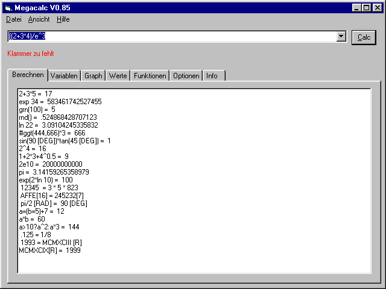

| Programmname | program name | MegaCalc | Version | version | V0.85 |
| Sprache | language | Größe | size | 54 KB | |
| Paket | package | Tools | Veröffentlicht am | published (dd.mm.yyyy) | 17.06.2000 (?) |
| Plattform | platform | Win32/VB | Letztes Update | last update (dd.mm.yyyy) | 09.03.2001 |
| Ein Taschenrechner, der unter anderem Graphen zeichnen, Wertetabellen
bilden und mit Zahlensystemen, Winkelsystemen, selbstdefinierten Funktionen
und
Iterationen umgehen kann. [Screenshot] Das "Original" gibt es hier. |
|
| --- |
